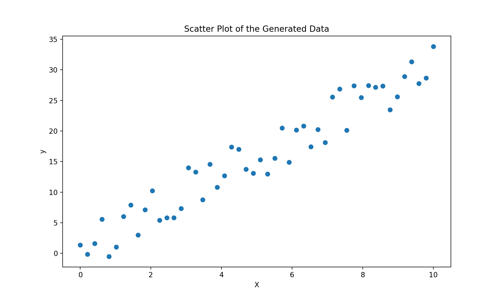
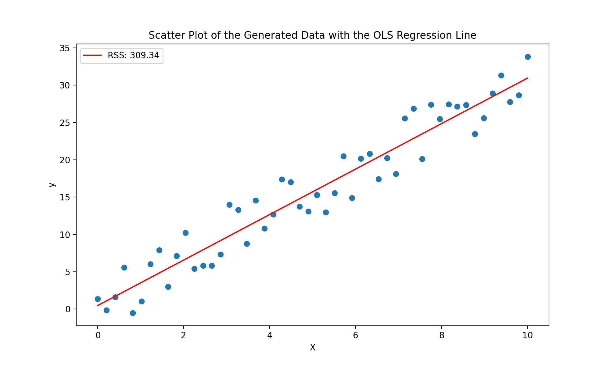
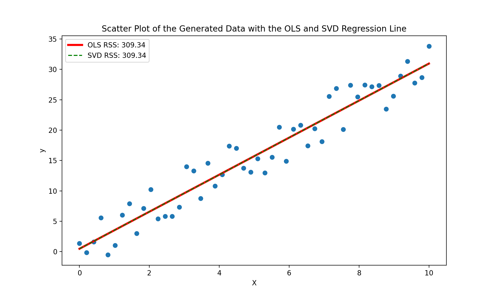

Linear Regression
“You can do linear regression without thinking about whether the phenomenon you’re modeling is actually close to linear. But you shouldn’t.”
- Jordan Ellenberg
Introduction
Linear regression, a fundamental concept in statistics and machine learning, serves as a powerful tool for modeling and understanding the relationships between variables. At its core, linear regression explores the linear association between an independent variable (or multiple variables) and a dependent variable. This technique provides a systematic way to quantify and predict the impact of changes in one variable on another, making it a cornerstone in the toolkit of data analysts and scientists. Whether predicting stock prices, analyzing economic trends, or understanding the factors influencing house prices, linear regression is a fundamental tool in statistical modeling. In this blog post, we'll delve into the principles of linear regression, model accuracy, and regularization.
What is Regression?
At its core, a regression problem is one where you have random variables $X=(X_1, X_2,\dots, X_n)\in\mathbb{R}^d$, $Y\in\mathbb{R}$, and $\varepsilon\in\mathbb{R}$, with the relationship $Y=f(X)+\varepsilon$, where $f$ is some unknown function. The goal of regression is to estimate $f$ using the data $\{(\boldsymbol{x}_1, y_1), (\boldsymbol{x}_2, y_2),\dots, (\boldsymbol{x}_n, y_n)\}$. In this situation, the variable $Y$ is the dependent or target variable, the variable $X$ is the independent or predictor variable, and the individual components $X_1, X_2,\dots, X_n$ of $X$ are the features or factors. The variable $\varepsilon$ is the error term.
In linear regression, we assume that the function $f$ takes the form of some linear or affine function, typically of the form $Y = \beta_0 + X^T\boldsymbol{\beta} + \varepsilon$, where $\boldsymbol{\beta}\in\mathbb{R}^d$, and $\beta_0\in\mathbb{R}$. This is often reformulated into the form $Y = \boldsymbol{\beta}^T\boldsymbol{x} + \varepsilon$, where $\boldsymbol{x} = (1, X_1, X_2,\dots, X_n)\in\mathbb{R}^{d+1}$, and $\boldsymbol{\beta} = (\beta_0, \beta_1, \beta_2,\dots, \beta_n)\in\mathbb{R}^{d+1}$.
Here, $\boldsymbol{\beta}$ is unknown, so the goal of linear regression is to estimate $\boldsymbol{\beta}$ using the data $\{(\boldsymbol{x}_1, y_1), (\boldsymbol{x}_2, y_2),\dots, (\boldsymbol{x}_n, y_n)\}$. This is done by minimizing the residual sum of squares (RSS), which is defined as $$RSS= ||\boldsymbol{y} - \mathbb{X}\tilde{\boldsymbol{\beta}}||_2^2 = \sum_{i=1}^n \tilde{\varepsilon}_i^2.$$ where $\tilde{\varepsilon}_i$ is the residuals defined as the difference between the measured and predicted values, given by $$\widetilde{\varepsilon}_i = y_i - \tilde{y}_i,$$ $\tilde{y}_i$ is the fitted or predicted values of $y_i$, defined as $$\tilde{y}_i = \boldsymbol{x}_i^T\tilde{\boldsymbol{\beta}} = (\mathbb{X}\tilde{\boldsymbol{\beta}})_i,$$ and $\mathbb{X}$ is the design matrix defined as $$\mathbb{X} = \begin{bmatrix} \boldsymbol{x}_1^T \\ \boldsymbol{x}_2^T \\ \vdots \\ \boldsymbol{x}_n^T \\ \end{bmatrix} = \begin{bmatrix} 1 & x_{11} & x_{12} & \dots & x_{1d} \\ 1 & x_{21} & x_{22} & \dots & x_{2d} \\ \vdots & \vdots & \vdots & \ddots & \vdots \\ 1 & x_{n1} & x_{n2} & \dots & x_{nd} \\ \end{bmatrix}$$
It should be known that the residual sum of squares is a pretty good choice for measuring the quality of our model. But, one of the best ways to estimate what our unknown $\boldsymbol{\beta}$ values are is to use the ordinary least-squares (OLS) method.
The ordinary least-squares method is done by calculating $$\widehat{\boldsymbol{\beta}} = \text{argmin}_{\tilde{\boldsymbol{\beta}}}||y - \mathbb{X}\tilde{\boldsymbol{\beta}}||_2^2 = \text{argmin}_{\tilde{\boldsymbol{\beta}}}\sum_{i=1}^n \tilde{\varepsilon}_i^2,$$ and if $\mathbb{X}$ is of full rank (meaning its columns are linearly independent), then we can use the equation $$\mathbb{X}^T\mathbb{X}\widehat{\boldsymbol{\beta}} = \mathbb{X}^T\boldsymbol{y}$$ to get the solution, given by $$\widehat{\boldsymbol{\beta}} = (\mathbb{X}^T\mathbb{X})^{-1}\mathbb{X}^T\boldsymbol{y}.$$ Of course, in practice, you would never invert the matrix $\mathbb{X}^T\mathbb{X}$ because of its time complexity and stability, but instead use a more efficient method like QR decomposition.
But what if your matrix $\mathbb{X}$ is not of full rank? There are two main ways to deal with this, the first one being to us the SVD of the matrix, which we will now describe.
Recall that if $\mathbb{X}$ is of rank $r$, then we can write it as $$\mathbb{X} = U\Sigma V^H,$$ where $U\in M_{n\times r}$, $V\in M_{r\times d}$, and $\Sigma\in M_{r\times r}.$ Recall that the matrices $U$ and $V$ are orthonormal, so we can solve the OLS problem by $$\widehat{\boldsymbol{\beta}} = V\Sigma^{-1}U^T\boldsymbol{y}.$$ Not only will this product a solution in the rank deficient case (please note this is not a unique solution), but it also has several computational advantages over the method presented for the full-rank case. Thus, even if you have a full-rank matrix, it can often be helpful to use the SVD method because of its speed.
Python Example of OLS
Now that we mathematically understand how to solve linear regression problems using the OLS method, let's see how we can implement this in Python. For this example, we will use randomly generated data.
Let's begin by generating the data. To do that, we can use the following code:
# Import NumPy
import numpy as np
# Get the random data, first setting a random seed for reproducibility
np.random.seed(100)
n = 50 # Number of points
X = np.linspace(0, 10, n) # Generate n points between 0 and 10 for X
epsilon = np.random.uniform(-5, 3, size=(n, )) # Noise for y coordinates
y = 2 + 3*X + epsilon # Generate y coordinates
This code produces the following graph
It is pretty easy to see the linear relationship between this data, but there is no clear linear line that best fits this.
Now, let's implement the OLS method. To do this, we will use the following code:
def OLS(X, y):
"""
Perform Ordinary Least Squares (OLS) linear regression.
Parameters:
- X (numpy.ndarray): Input feature matrix of shape (n_samples, n_features).
- y (numpy.ndarray): Target variable vector of shape (n_samples,).
Returns:
- numpy.ndarray: Coefficient vector beta, representing the solution to the OLS regression.
This function fits a linear regression model using the Ordinary Least Squares method. It adds a column
of ones to the input feature matrix X to account for the intercept term (beta_0). The function then
calculates and returns the coefficient vector beta using the OLS formula: beta = (X^T * X)^(-1) * X^T * y.
"""
# Add a column of ones to X (account for beta_0)
X = np.column_stack((np.ones_like(y), X))
# Return beta's
return np.linalg.solve(X.T @ X, X.T @ y)
Running this code on our generated data, calculating the RSS, and plotting our results, we can visualize how well our OLS line fits the data.
Pretty good!
Now, using the same data, let's code up an SVD solver, and see how well it does. We can code up the SVD solver using the following code.
def SVD_OLS(X, y):
"""
Perform Ordinary Least Squares (OLS) linear regression using Singular Value Decomposition (SVD).
Parameters:
- X (numpy.ndarray): Input feature matrix of shape (n_samples, n_features).
- y (numpy.ndarray): Target variable vector of shape (n_samples,).
Returns:
- numpy.ndarray: Coefficient vector beta, representing the solution to the OLS regression.
This function fits a linear regression model using the Ordinary Least Squares method with the help of
Singular Value Decomposition (SVD). It adds a column of ones to the input feature matrix X to account
for the intercept term (beta_0). The function then computes the SVD of X (X = U * Sigma * V^T), where U and
V are orthogonal matrices, and Sigma is a diagonal matrix of singular values. The OLS solution is obtained
using the SVD components: beta = V * diag(1/s) * U^T * y, where diag(1/s) represents the inverse of the
diagonal matrix of singular values.
"""
# Add a column of ones to account for beta_0
X = np.column_stack((np.ones_like(y), X))
# Compute SVD of X
U, s, V = np.linalg.svd(X, full_matrices=False)
# Return OLS using SVD
return V.T @ np.diag(1/s) @ U.T @ y
Running this code on our generated data, calculating the RSS, and plotting our results (along with the results from the OLS method), we can visualize how well our SVD line fits the data.
As you can see, the lines are exactly the same with the exact same RSS score. Thus, either option is viable for our randomly generated data!
Regularization
Now that we have a basic understand of doing linear regression, let's explore the method of regularization and how it can improve our models.
Ridge Regression
The first form of regularization we want to look at is Ridge or $L^2$ regularization. Ridge regularization is a simple modification we can make to our linear regression. We can implement ridge regression by modifying the OLS method as follows: $$\widehat{\boldsymbol{\beta}} = \text{argmin}_{\boldsymbol{\beta}}\frac{1}{n}||y - \mathbb{X}\boldsymbol{\beta}||_2^2 + \lambda||\boldsymbol{\beta}||_2^2$$ In this case, $\lambda>0$ is a hyperparameter that you can tweek.
In this formula, we include $\frac{1}{n}$ because the OLS term growing larger with more data, but the regularization term does not. Thus, scaling by a factor of $\frac{1}{n}$ ensures that things are kept proportional. It is also important to note that if $\lambda$ is very small, then our minimizer is essentially just the OLS solution and is potentially overfit, and if $\lambda$ is very large, then our minimizer is close to $0$ and is potentially underfit. Thus, adding ridge regularization can allow our model to avoid over or underfitting our data.
Another benefit of using ridge regression is that even if $\mathbb{X}^T\mathbb{X}$ is singular or nearly singular (i.e., not invertible), adding this regularization term will make it invertible. Thus, ridge regression can be used to solve the problem of $\mathbb{X}^T\mathbb{X}$ being singular. We can find the unique minimizer of a problem using the following formula $$\widehat{\boldsymbol{\beta}} = (\mathbb{X}^T\mathbb{X} + n\lambda I)^{-1}\mathbb{X}^T\boldsymbol{y}$$ where $I$ is simply an $(n\times n)$ identity matrix.
One important thing to note about ridge regression is that it will rarely zero-out the $\beta$ coefficients. Instead, it makes unnecessary coefficients very small. This is nice if we do not care about model interpretability, but if understand more about the model is important, ridge regression makes it difficult. In this case, we can use Lasso or $L^1$ regularization.
Lasso Regression
Lasso regularization is very similar to ridge regularization, but instead of using the $L^2$ norm, we use the $L^1$ norm. Thus, we can implement lasso regression by modifying the OLS method as follows: $$\widehat{\boldsymbol{\beta}} = \text{argmin}_{\boldsymbol{\beta}}\frac{1}{n}||y - \mathbb{X}\boldsymbol{\beta}||_2^2 + \lambda||\boldsymbol{\beta}||_1$$
As mentioned above, lasso regression will zero-out coefficients. This makes lasso regression extremely helpful for feature selection. In fact, lasso regression often out performs stepwise feature removal! A potential downside of lasso regression is that unlike ridge regression, it is not easily solved using standard techniques. This is because the loss function is not differentiable at every point. The loss function is convex, however, which means we can use standard convex optimization techniques to solve it.
Elastic Net Regularization
A final regularization technique to mention is elastic net regularization. Elastic net regularization is simply a combination of ridge and lasso regularization. This is beneficial because it combines the benefits of ridge regression (which often out performs lasso regression), but still encourages the sparsity that comes from lasso regression. Elastic net regularization is given by: $$\widehat{\boldsymbol{\beta}} = \text{argmin}_{\boldsymbol{\beta}} \frac{1}{n}||y - \mathbb{X}\boldsymbol{\beta}||_2^2 + \lambda_2||\boldsymbol{\beta}||_2^2 + \lambda_1 ||\boldsymbol{\beta}||_1,$$ where $\lambda_1, \lambda_2\geq 0$. We can minimize this loss function using similar techniques for minimizing lasso regression.
Conclusion
Linear regression is a simple, yet powerful tool for analyzing data. It is a simple machine learning algorithm, but it is easy to understand and implement, making it a helpful first algorithm in a data scientist's toolkit. To see the code used in this blog post (including creating the images), checkout the file on my Github.